Lead Follow-Up Slack Alert: No Contact in 24h
Leads come in from Facebook ads, Typeform forms, website inquiries — and then nothing happens. Nobody follows up for a day, sometimes two. By then the lead has moved on, and the money you spent acquiring them is wasted. This Make.com tutorial builds an automated follow-up reminder that scans your Google Sheet every hour and sends a Slack alert the moment a lead goes 24 hours without contact. No code, no manual checking, no more forgotten leads.
Why Slow Follow-Up Is the Most Expensive Mistake in Lead Generation
You already know speed to lead matters — but the real cost is invisible. The probability of converting a lead drops dramatically with every hour that passes. Contact a lead within the first hour and your chances are significantly higher than if you wait even a few hours. By the 24-hour mark, most leads have either moved on, filled out a competitor's form, or simply forgotten why they reached out in the first place. If you're spending $5-20 per lead on Facebook ads or running Typeform intake forms on your website, every lead that goes cold without follow-up is money you've already spent and can't recover. The fix isn't hiring more people or checking your spreadsheet more often. It's a simple automation that watches your lead tracker and alerts your team the moment someone falls through the cracks.
How the Lead Follow-Up Reminder Automation Works
This automation runs on a schedule — every hour, Make.com checks your Google Sheet for leads that meet three conditions: they were submitted more than 24 hours ago, nobody has marked them as "Contacted," and no reminder has been sent yet. For every lead that matches, Make.com sends a Slack message to your team channel with the lead's name, email, source, and submission date. Then it marks the row as "Reminded" so you don't get the same alert again next hour.
How the Workflow Runs
| Step | What Happens | Tool |
|---|---|---|
| 1 | Search for leads with no follow-up and no prior reminder | Google Sheets Search Rows |
| 2 | Filter leads older than 24 hours | Make.com Filter |
| 3 | Send alert to your team channel | Slack |
| 4 | Mark lead as reminded so it doesn't repeat | Google Sheets Update a Row |
You can build this automation on Make.com in about 20 minutes. The Core plan at $9/month (annual billing) tends to work best for scheduled scenarios — read why below. Start free on Make.com →
Why This Scenario Uses Polling Instead of Webhooks
If you've read our other tutorials, you know we always recommend INSTANT (webhook) triggers — they fire the moment data arrives and consume zero operations while idle. This automation is different. There's no external event to trigger a webhook. Nothing "happens" when a lead goes cold — the absence of action is the trigger. The only way to detect that is to check your spreadsheet on a schedule and compare timestamps. That's what polling does: Make.com runs the scenario at a fixed interval (every hour) and looks for leads that match your criteria.
What You Need Before Starting
This automation reads from a Google Sheet that serves as your lead tracker. Here's the sheet structure used throughout this tutorial — your lead tracker should follow this layout, with columns A through I.
Lead Tracker Sheet Structure
| Column | Header | Purpose | Who Fills It |
|---|---|---|---|
| A | Lead's email address | Automation (from lead source) | |
| B | Name | Lead's full name | Automation (from lead source) |
| C | Phone | Phone number | Automation (from lead source) |
| D | Source | Which channel the lead came from | Automation (from lead source) |
| E | First Seen | Date the lead first entered the sheet (format: YYYY-MM-DD) | Automation (from lead source) |
| F | Last Updated | Most recent activity date | Automation (from lead source) |
| G | Notes | Project details or ad campaign name | Automation (from lead source) |
| H | Status | "Contacted" when someone follows up | Your team (manual) |
| I | Reminded | "Yes" after Make.com sends a reminder | Automation (this scenario) |
The key columns for this automation are Status (H) and Reminded (I). Status is where your team manually types "Contacted" after reaching out to a lead — any lead without this is considered uncontacted. Reminded is where Make.com writes "Yes" after sending a Slack alert, which prevents the same reminder from firing every hour for the same person. Columns A through G come from your lead capture process, whether that's Facebook ads, Typeform forms, website contact pages, or manual entry.
Don't Use Slack? Alternatives That Work the Same Way
This guide uses Slack for team alerts, but Make.com supports any messaging tool. If your team doesn't use Slack, swap the Slack module for one of these — the rest of the workflow stays identical. Gmail: send an alert email to your sales team instead. Microsoft Teams: same concept as Slack, select the Teams module and pick your channel. Google Chat: if you're already in Google Workspace, this is the simplest swap.
How to Build the Lead Follow-Up Reminder Automation
- Create a new scenario in Make.com — click "Create a new scenario" on your dashboard. You'll see an empty canvas ready to build.
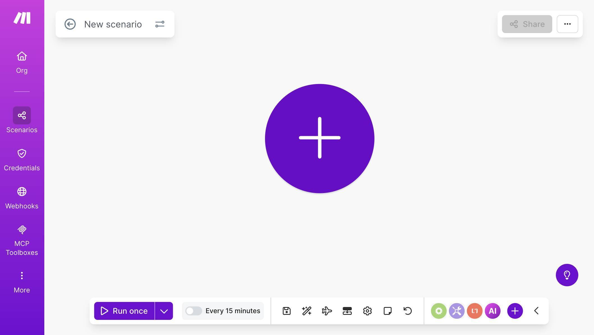
Make.com scenario canvas — empty canvas ready to build a new automation - Click the + button and search for "Google Sheets" — select "Search Rows." This module scans your lead tracker for rows matching specific criteria. Connect your Google account, select your Lead Tracker Master spreadsheet, and set Sheet Name to Sheet1. Set Table contains headers to Yes.
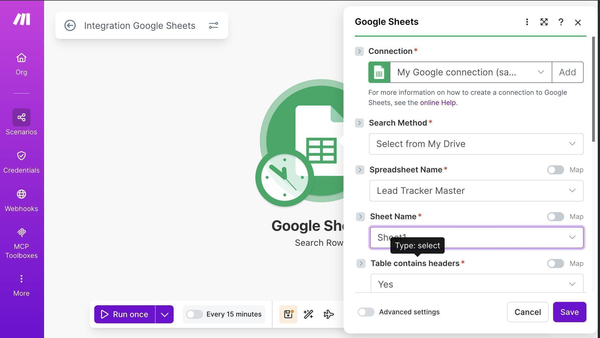
Google Sheets Search Rows — Lead Tracker Master spreadsheet selected with Sheet1 - Configure the Search Rows filter with two conditions. First condition: Status (H) — set the operator to "Text operators: Not equal to" and the value to "Contacted." Second condition: add an AND rule, set Reminded (I) — operator "Text operators: Not equal to" — value "Yes." This ensures Make.com only returns leads that haven't been contacted and haven't already received a reminder.
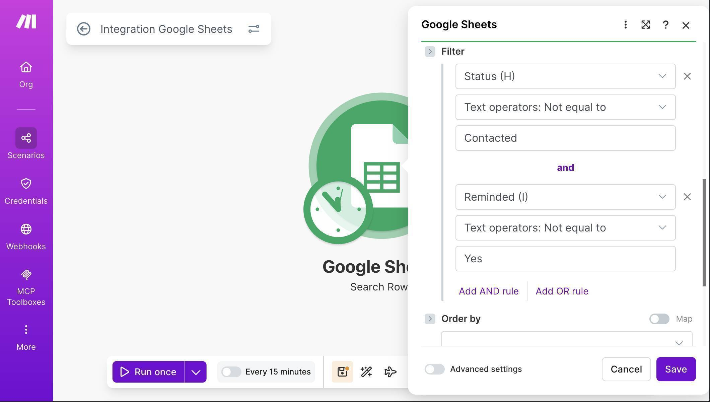
Search Rows filter — Status not equal to Contacted AND Reminded not equal to Yes - Add a Filter module between Search Rows and the next module — click the dotted line after the Google Sheets module and select "Set up a filter." This filter checks whether each lead is older than 24 hours. Label it "Older than 24 hours." In the Condition field, enter: parseDate( First Seen (E) ; "YYYY-MM-DD" ) as the left side, set the operator to "Numeric operators: Less than", and enter addDays( now ; -1 ) as the right side.
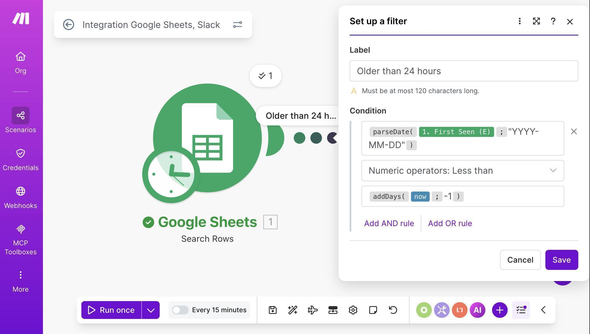
Make.com filter — parseDate formula comparing First Seen to addDays now minus 1 - 💡 Pro Tip: Your First Seen column stores dates as text (e.g. "2026-03-01"), not as actual date objects. The parseDate function converts that text string into a real date that Make.com can compare. Without parseDate, the filter will fail silently — Make.com can't compare a text string to a date. This is one of the most common gotchas when working with Google Sheets dates in Make.com. Note: this formula assumes your First Seen column contains text in YYYY-MM-DD format. If your Google Sheet uses a native date format instead of text, you can skip parseDate and compare the column value directly against addDays(now; -1).
- 💡 Pro Tip: Make sure your timezone setting in Make.com matches your Google Sheet timezone. Make.com uses the timezone from your Organization settings, and Google Sheets uses the timezone from File → Settings. If these don't match, a "24 hour" check could actually trigger at 22 or 26 hours depending on the offset.
- Add a Slack module — click the + button after the filter, search for "Slack" and select "Send a Message." Connect your Slack workspace and select your alert channel (e.g. #lead-followup). Set Channel type to match your channel — public or private.
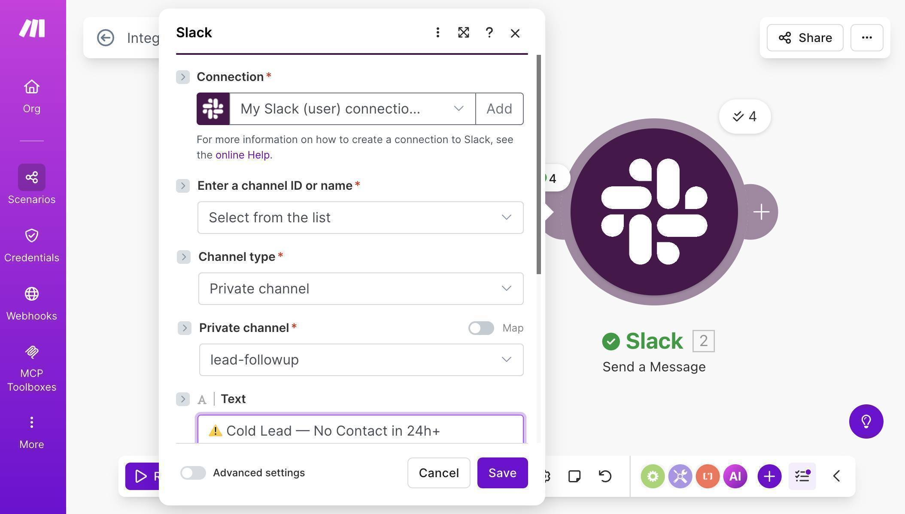
Slack module — connection configured with lead-followup channel selected - Compose the Slack notification using mapped fields from the Google Sheets Search Rows module. Include the lead's name, email, source, and submission date so your team has everything they need to follow up immediately.
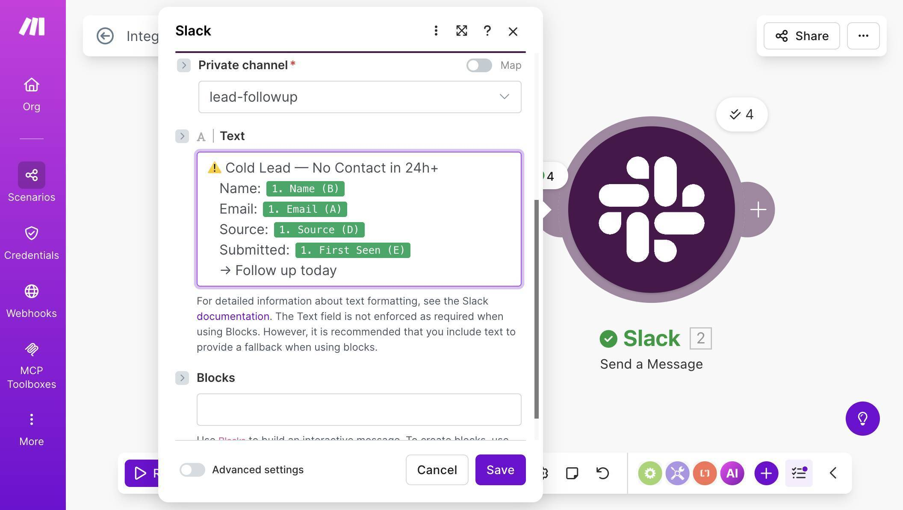
Slack message body with mapped fields — Cold Lead alert with Name, Email, Source and First Seen date - Add a Google Sheets "Update a Row" module after Slack — this marks the lead as reminded so the same alert doesn't fire again next hour. Connect it to the same Lead Tracker Master spreadsheet. Map the Row number from the Search Rows result. Set the Reminded (I) column to "Yes" and map all other columns from the Search Rows data so existing values are preserved.
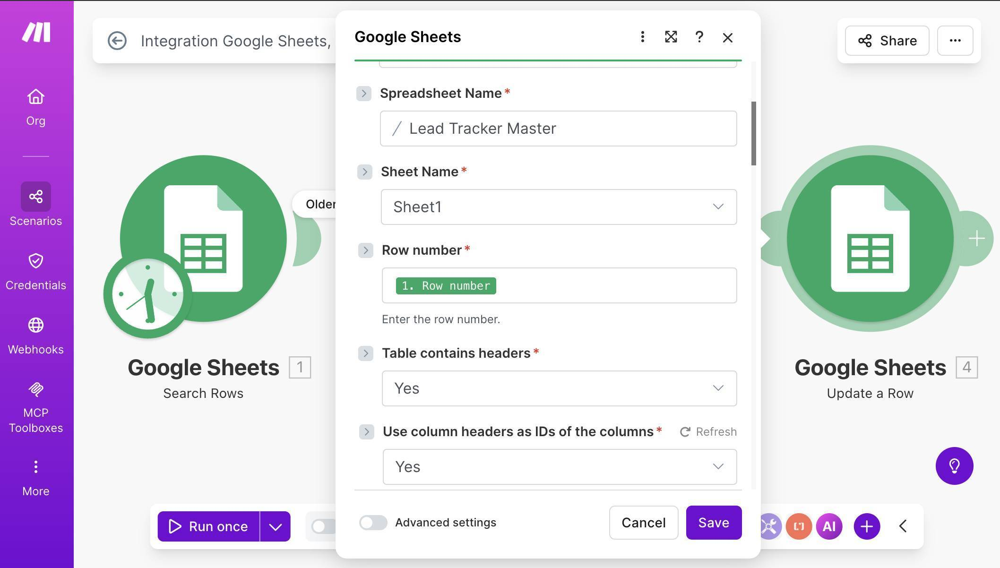
Google Sheets Update a Row — Row number mapped, Lead Tracker Master selected 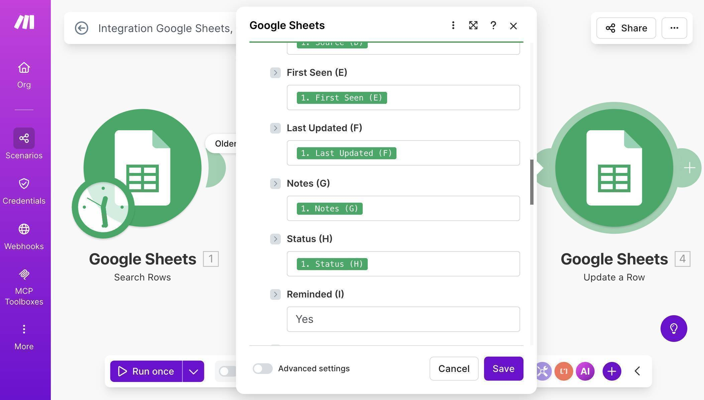
Update a Row field mapping — all columns preserved from Search Rows, Reminded set to Yes - 💡 Pro Tip: When updating a row, Make.com will overwrite any column you leave empty with a blank value — erasing your existing data. Always map the original values from Search Rows back into every column except the one you're changing (Reminded). This preserves your lead data while only updating the reminder status.
- Save the scenario — your canvas should now show three connected modules with a filter: Google Sheets Search Rows → Filter (Older than 24h) → Slack Send a Message → Google Sheets Update a Row.
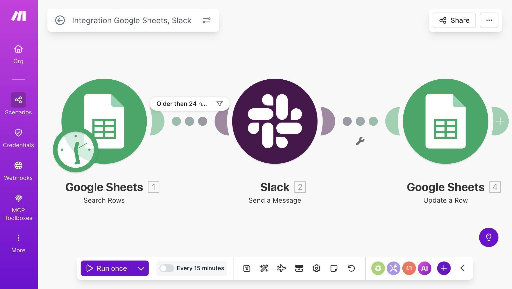
Complete Make.com scenario — Search Rows, filter, Slack, and Update a Row connected - Test the workflow — make sure your Google Sheet has at least one lead with a First Seen date older than 24 hours, an empty Status column, and an empty Reminded column. Click "Run once" on the scenario.
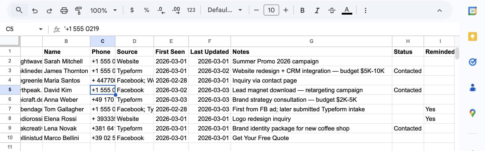
Google Sheet before test — leads with Status and Reminded columns ready for automation - Check your results — Make.com should process only the leads that match all three conditions (older than 24h, not contacted, not yet reminded). Your Slack channel receives an alert for each qualifying lead, and the Reminded column updates to "Yes" automatically.
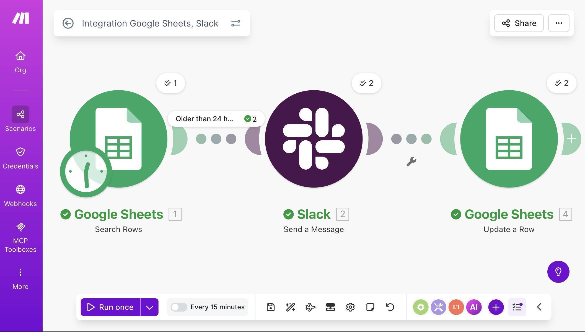
Scenario executed successfully — all modules showing green checkmarks with 2 leads processed 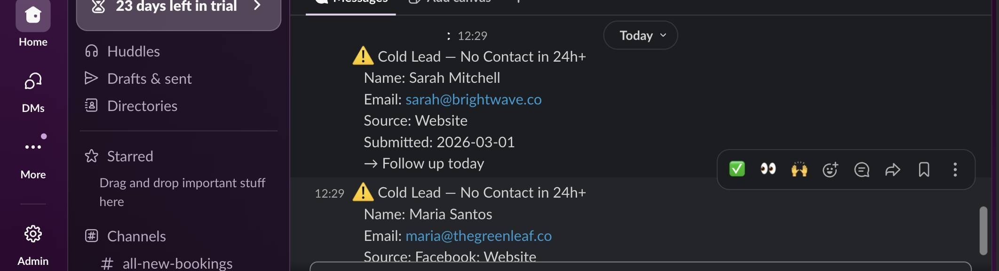
Slack notifications received in #lead-followup — two cold lead alerts with full details 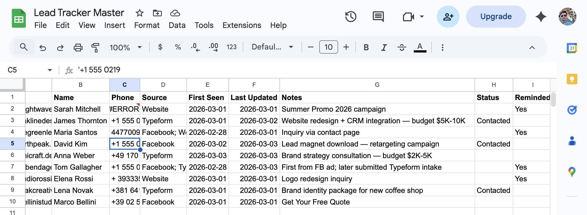
Google Sheet after test — Reminded column shows Yes for processed leads, Contacted leads untouched - Set up scheduling — click the clock icon on the Google Sheets trigger module. Set the interval to run every 60 minutes. This means Make.com checks your lead tracker once per hour and alerts your team about any lead that's gone cold since the last check. Toggle the scenario ON to activate it.
How Many Operations Does This Use?
Understanding the operation cost helps you decide which Make.com plan works for this scenario.
Every hour, the scenario runs and consumes at minimum 1 operation for the Search Rows module — even if no cold leads are found. When cold leads are found, each one costs 2 additional operations: 1 for the Slack message and 1 for the Update a Row. The filter module itself doesn't consume operations.
Monthly Operation Cost Estimates
| Situation | Operations Per Run | Monthly Total (hourly schedule) |
|---|---|---|
| No cold leads found (typical) | 1 | ~720/month |
| 2 cold leads per day on average | 1 + (2 × 2) = 5 | ~1,440/month (720 base + 720 for leads) |
| 5 cold leads per day on average | 1 + (2 × 5) = 11 | ~2,160/month |
These are estimates based on the 3-module scenario described in this tutorial. Actual usage may vary depending on how many leads match the filter on each run and whether you add extra modules later (e.g. a Gmail notification alongside Slack).
On the free plan (1,000 operations/month), the trigger alone consumes 720 operations — leaving only 280 for actual lead processing. That's roughly 140 cold lead alerts before hitting the limit, which may be enough for very low volume. For most businesses, the Core plan at $9/month (annual billing) with 10,000 operations tends to be more practical for scheduled automations.
How to Use This With Your Existing Lead Capture Automations
This scenario is designed to work alongside any lead capture automation that writes to the same Google Sheet. If you built the multi-source lead tracking automation from our previous tutorial, your leads already land in the Lead Tracker Master from Facebook ads, Typeform forms, and website webhooks. This follow-up reminder runs independently — it doesn't care where the lead came from, only that the First Seen date is older than 24 hours and nobody has followed up.
The workflow across your automations looks like this: a lead arrives from any source and lands in the sheet (handled by your existing lead capture scenarios). This scenario checks the sheet every hour and sends a Slack reminder for any lead that's gone 24 hours without contact. Your team sees the Slack alert, follows up with the lead, and manually types "Contacted" in the Status column. The next time the scenario runs, that lead is skipped.
Who Should Use This Automation
This workflow is built for any business that captures leads and needs to ensure timely follow-up. Agencies running paid ad campaigns where every lead has a real acquisition cost. Freelancers juggling multiple lead sources who can't check every dashboard daily. Sales teams where leads are assigned manually and sometimes fall through the cracks. Small business owners who handle follow-up themselves and need a safety net for busy days. If you're spending money to acquire leads — through ads, content marketing, or referral programs — this automation ensures none of that investment is wasted by slow follow-up.
Apps Used in This Automation
This workflow connects two tools. Make.com orchestrates the scheduled check and alert logic — the Core plan at $9/month (annual billing) tends to be more practical for polling scenarios due to operation consumption. Google Sheets stores your lead tracker and serves as the data source for the automation. Slack delivers the team alerts — any free Slack workspace works.
Frequently Asked Questions
Can I change the 24-hour threshold to something else?
Yes. In the filter formula, change addDays(now; -1) to any interval you need. For 48 hours, use addDays(now; -2). For 12 hours, use addHours(now; -12). The logic stays the same — only the time window changes.
What if my team uses the sheet for leads from manual entry too?
This automation doesn't care how the lead got into the sheet. As long as the row has a First Seen date and the Status column is empty, it will be checked. Manual entries work identically to automated ones.
Does the filter module consume Make.com operations?
No. Filters in Make.com don't count as operations — they evaluate conditions without consuming credits. Only actual module executions (Search Rows, Slack, Update a Row) count toward your monthly limit.
What happens if my team forgets to type "Contacted" in the Status column?
The lead will trigger one Slack reminder (because Reminded gets set to "Yes" after the first alert), but it won't keep reminding every hour. If you want recurring reminders until someone follows up, you'd need to modify the scenario to check Reminded ≠ "Yes" only for leads within a certain window, or reset the Reminded column periodically.
Can I run this on Make.com's free plan?
Technically yes, but it's not ideal. The hourly polling trigger alone uses about 720 operations per month — 72% of the free plan's 1,000 limit. The Core plan at $9/month (annual billing) with 10,000 operations is a better fit for any scheduled automation.
Why not use a webhook trigger instead of polling?
There's no external event to trigger a webhook when a lead goes cold — the absence of action is the trigger. Polling is the only way to detect that a lead has sat untouched for a specific time period. This is one of the few cases where polling is the right approach.